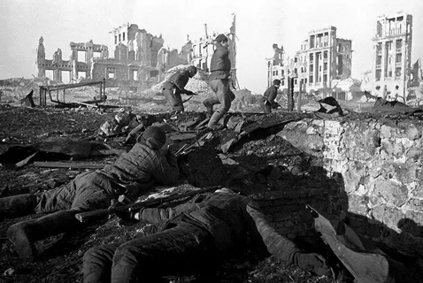
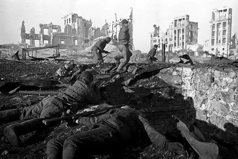
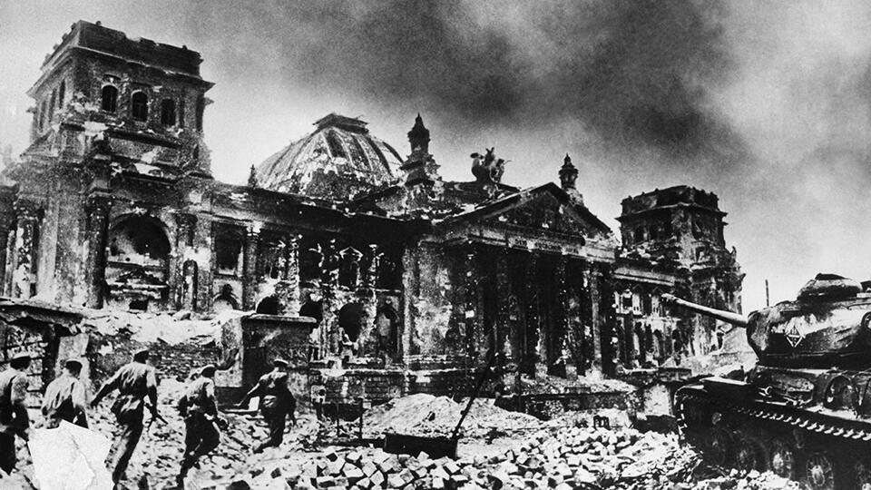
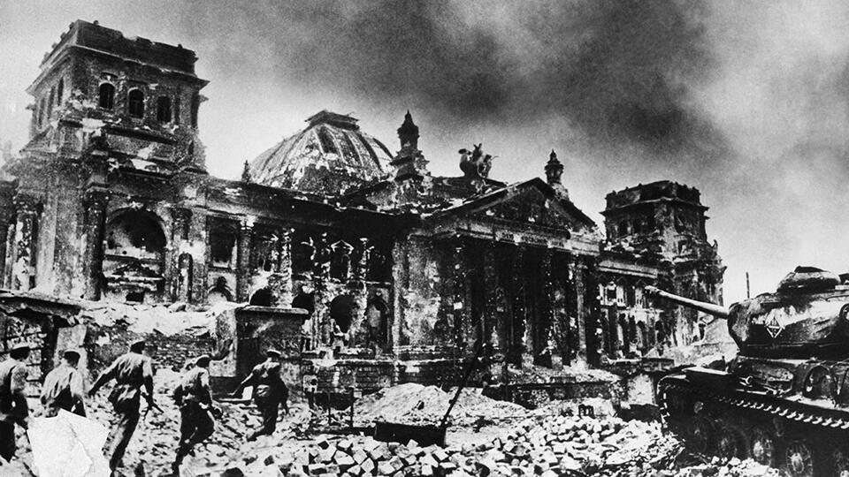

С Днем Великой Победы! 🎗️
9 мая - священный день, наполненный памятью о героизме и мужестве нашего народа.
История Победы 🎗️
Великая Отечественная война (1941-1945) стала одним из самых кровопролитных и значимых событий XX века. Нападение фашистской Германии на Советский Союз 22 июня 1941 года положило начало этому тяжелому периоду. Героическое сопротивление Красной Армии, партизанское движение и самоотверженный труд в тылу позволили переломить ход войны.
Ключевыми сражениями стали битва за Москву, Сталинградская битва, Курская дуга и битва за Берлин. Эти победы продемонстрировали силу духа и единство советского народа. 9 мая 1945 года был подписан акт о безоговорочной капитуляции Германии, ознаменовавший окончание Великой Отечественной войны и победу над фашизмом.
 

 

Герои Войны 🎗️

Георгий Жуков
Выдающийся советский полководец, маршал Советского Союза, четырежды Герой Советского Союза. Сыграл ключевую роль в планировании и проведении многих важных операций, включая оборону Москвы, Сталинградскую битву и взятие Берлина.
Подробнее
Александр Покрышкин
Легендарный летчик-ас, маршал авиации, трижды Герой Советского Союза. Совершил более 650 боевых вылетов, провел 156 воздушных боев, сбил 59 вражеских самолетов. Разработал новые тактические приемы воздушного боя.
Подробнее
Зоя Космодемьянская
Партизанка, Герой Советского Союза (посмертно). Первая женщина, удостоенная звания Героя Советского Союза во время Великой Отечественной войны. Была схвачена и казнена немцами, проявив невероятное мужество.
ПодробнееОсновные Причины Победы 🎗️
- Единство и патриотизм народа: Несокрушимый дух и готовность к самопожертвованию советских людей.
- Героизм солдат и офицеров: Мужество и отвага на полях сражений.
- Самоотверженный труд в тылу: Обеспечение фронта всем необходимым.
- Стратегическое руководство: Умелое командование вооруженными силами.
- Массовое партизанское движение: Сопротивление на оккупированных территориях.
- Превосходство советской военной науки и техники (на позднем этапе войны).
Наследие Великой Победы 🎗️
Победа в Великой Отечественной войне имеет огромное историческое значение и продолжает оказывать влияние на современный мир.
- Сохранение мира и предотвращение мирового господства фашизма: Эта победа избавила мир от ужасов нацистской идеологии.
- Укрепление международного авторитета СССР: Советский Союз сыграл решающую роль в разгроме Германии и стал одним из основателей Организации Объединенных Наций.
- Национальная гордость и патриотизм: День Победы является важным символом национальной идентичности и гордости за подвиг предков.
- Уроки истории: Память о войне служит предостережением от повторения подобных трагедий и напоминает о ценности мира.
- Воспитание молодого поколения: История войны и героизма вдохновляет молодежь на служение Родине и укрепляет чувство патриотизма.
- Вклад в развитие военной науки и техники: Опыт войны способствовал развитию новых видов вооружений и тактических приемов.
Наследие Победы живет в наших сердцах и определяет наше отношение к миру и безопасности.
Поздравления с Днем Победы 🎗️
С Днем Победы! Пусть мирное небо всегда будет над нами, а память о героях живет в наших сердцах.
Желаем крепкого здоровья ветеранам, счастья и благополучия всем поколениям! С 9 мая!
Пусть этот великий день вдохновляет нас на добрые дела и напоминает о ценности мира.
В этот знаменательный день желаем единства, согласия и процветания нашей стране!
Пусть радость Победы наполняет ваши сердца и дарит надежду на светлое будущее!
Вечная Память 🎗️
Мы помним подвиг тех, кто сражался за нашу свободу. Их имена навсегда вписаны в историю.
Вечный огонь
Красный мак
Звон памяти
Память о павших
Слава героям Победы! Вечная слава павшим!